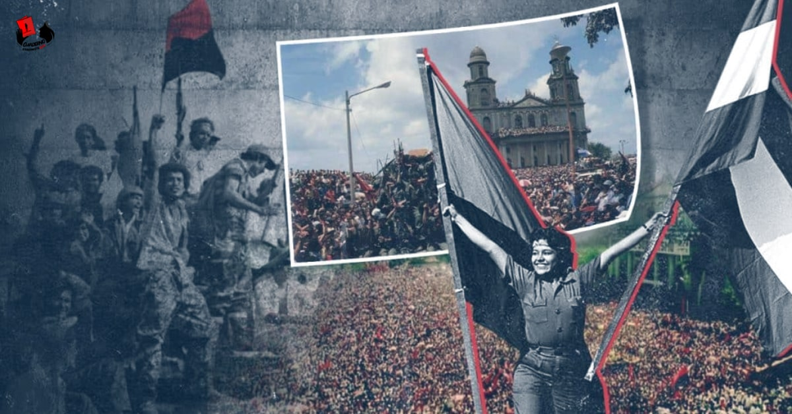

Universidad Nacional De Ingeniería
Universidad Nacional De Ingeniería
Hazañas Militares, Soberanía y Trascendencia Continental

En 1927, Sandino logró organizar una fuerza armada estructurada bajo principios políticos claros y un fuerte sentido de identidad nacional: el Ejército Defensor de la Soberanía Nacional de Nicaragua. No fue simplemente la creación de un grupo insurgente, sino la consolidación de una organización con mando definido, disciplina interna, estructura jerárquica y objetivos estratégicos precisos que se mantuvo activa durante seis años frente a fuerzas militares superiores.
Sandino diseñó e implementó tácticas de guerra irregular adaptadas al terreno montañoso del norte de Nicaragua. Su capacidad para movilizar pequeñas unidades, ejecutar ataques estratégicos y retirarse con rapidez permitió sostener la resistencia en condiciones de inferioridad material, convirtiéndose en un referente histórico de resistencia asimétrica en América Latina.
Durante seis años mantuvo una postura firme e invariable en defensa de la autodeterminación del país. Su rechazo a acuerdos que consideraba lesivos para la independencia nacional consolidó la soberanía como principio central del debate político. Su coherencia ideológica fortaleció la legitimidad moral de su causa ante el mundo.
La continuidad de la resistencia armada y la presión política generada por el conflicto influyeron decisivamente en el escenario que culminó con la retirada de las tropas de los marines estadounidenses en 1933. Este acontecimiento representó una victoria moral de proporciones históricas.
Más allá del ámbito militar, Sandino consolidó en la conciencia colectiva la idea de que Nicaragua debía ejercer plenamente su soberanía política. Su lucha ayudó a establecer la autodeterminación como un valor esencial del Estado nicaragüense.
Su liderazgo contribuyó a consolidar un sentimiento de unidad nacional en torno a la defensa de la patria. A través de su discurso y ejemplo, promovió la idea de dignidad nacional, reforzando el orgullo y la conciencia histórica del pueblo nicaragüense.
La figura de Sandino trascendió fronteras y se convirtió en un referente regional de oposición al intervencionismo. Su lucha posicionó el caso nicaragüense en el debate político latinoamericano, recibiendo el respaldo solidario de intelectuales y líderes mundiales.
En los territorios bajo su influencia en el río Coco promovió cooperativas agrícolas, dinámicas de trabajo colectivo y participación comunitaria, buscando la dignificación de los campesinos y la autosuficiencia económica.
Tras la retirada de las tropas extranjeras en 1933, Sandino demostró vocación pacífica y voluntad para contribuir a la estabilidad nacional participando en acuerdos de pacificación para consolidar la soberanía alcanzada sin prolongar el conflicto armado.
Después de su martirio en 1934, su pensamiento y figura se convirtieron en un símbolo permanente de patriotismo y soberanía, siendo proclamado oficialmente como Héroe Nacional de Nicaragua.